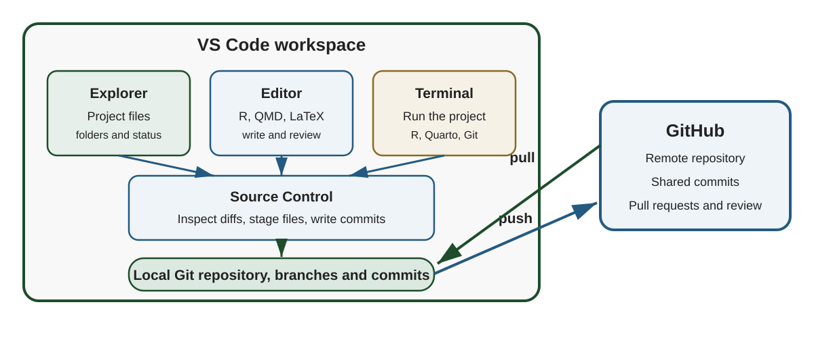
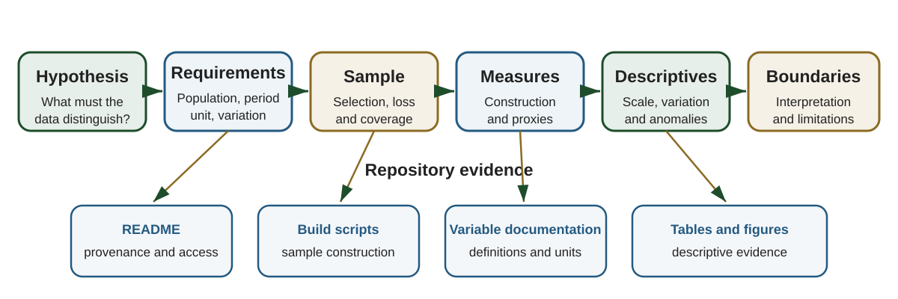

AREC 570 / ECON 530 · Unit 5
First third: VS Code as the research workspace
Remaining two thirds: the data section and its repository evidence

| Tool | Role in the workflow | Check |
|---|---|---|
| Git | Local version history | git --version |
| R | Statistical computing | R --version |
| VS Code | Editor and integrated workspace | Open the application |
| R extension | R terminal, completion, plots, and help | Create an R terminal |
| Quarto extension | Edit, execute, render, and preview .qmd files |
Preview a .qmd file |
Install the R language server from an R console
git statusThe repository root contains .git and the project files
| VS Code area | What to verify |
|---|---|
| Explorer | Project structure and expected files |
| Status bar | Active branch and repository status |
| Source Control | Uncommitted and staged changes |
| Terminal | Working directory and available software |
| Extensions | R and Quarto support enabled for this workspace |
Start the session by pulling accepted commits into the current branch
Open the Command Palette with Ctrl+Shift+P
.R fileCtrl+EnterRun the master script from the R terminal
A collaborator should be able to identify the entry point from the README
The Source Control view and terminal operate on the same local Git repository
Source: Source control in VS Code
Ask four questions
Stage a coherent set of files after reviewing the diff
Built-in Git support handles cloning, pulling, committing, and pushing
The GitHub Pull Requests and Issues extension adds
Repository permissions still determine where a branch can be pushed
Source: Work with GitHub in VS Code
Research question
How did grocery retailers adjust prices and dollar margins during COVID-19 states of emergency, when anti-price-gouging laws, demand, and wholesale costs changed at the same time?
Framework-derived hypotheses
The section should establish that the observed data can evaluate the hypotheses under stated conditions

| Part of a hypothesis | What the data section must establish |
|---|---|
| Outcome | The measure, unit, and reference period |
| Explanatory factor | The observed variable that represents the proposed mechanism |
| Comparison | The groups, places, or periods that generate variation |
| Population | The units to which the hypothesis applies |
| Conditions | The controls, restrictions, and assumptions needed for interpretation |
The hypothesis determines the observations, measures, and variation the data section must establish
Address the questions that determine provenance and coverage
Add information that affects interpretation or replication
Report
Explain how each rule affects the claims the sample can support
The observation unit states what one row represents
The key is the field or combination of fields that uniquely identifies each row
For each central variable report
Give enough information for another researcher to reconstruct the variable
For every consequential restriction state
Report
Keep the original value and the imputed value in separate fields
A proxy is an observed measure used to represent an unobserved concept
For each proxy
Measurement limits should appear in the data section and in the interpretation of the results
The opening paragraph identifies the source, records, period, locations, firms, and geography
We use item-level scanner data from DecaData, which report daily retail transactions from January 1, 2018, through July 17, 2023 for 549 grocery stores affiliated with three major retail chains operating across five Southeastern U.S. states
The remaining source description explains the chains, product records, and access conditions
The price-gouging manuscript reports a three-stage product-selection procedure
Coverage screen: present in 80 percent of both 26-week windows, observed for five weeks on each side, and passing in 75 percent of stores
| Stage | Result |
|---|---|
| Item-level transactions | 74 product categories |
| Perishable produce restriction | 47 candidate categories |
| Coverage screen | Products observed near activation and expiration |
| Sales and volume ranking | Five focal products |
| Analytic restrictions | Positive quantity, price, and wholesale cost |
| Final panel | 604,121 store-product-week observations |
The manuscript should report the counts available at each consequential stage
The analysis aggregates transactions to the store-product-week level
| Index | Meaning |
|---|---|
| Store | |
| Product | |
| State | |
| Week |
The key is the combination of store, product, and week
State identifies the policy environment associated with each store
For store , product , state , and week
Average wholesale acquisition cost
Retail-wholesale margin
The shared product, store, week, and physical unit give the spread a direct interpretation
The empirical setting determines three periods for each state
links the state-level legal setting to each store-product-week
counts weeks since activation during the emergency period
Report the date source and the rule used to assign partial weeks
The analysis requires positive quantities, retail prices, and wholesale costs
Price-change models also require consecutive observations for the same store and product
The data section should report
| Construct | Available measure | Scope of interpretation |
|---|---|---|
| Consumer price | Net transaction price | Average register price for the item within the week |
| Retailer input cost | Wholesale acquisition cost | Procurement cost recorded in the point-of-sale system |
| Retail margin | Net price minus acquisition cost | Retail-wholesale spread |
| Policy exposure | Active state emergency declaration | Statutory APG exposure by state and week |
Labor, logistics, handling, shrink, and spoilage remain outside the observed cost measure
The manuscript identifies three central boundaries
These boundaries guide the language used for margins, price indexes, and policy interpretation
| Empirical claim | Data feature that supports it | Boundary |
|---|---|---|
| Prices changed during the SOE | Weekly net price for the same products and stores | Other contemporaneous changes remain part of the reduced-form setting |
| Margins changed during the SOE | Retail price and acquisition cost use the same unit | The spread omits other retailer costs |
| Empirical claim | Data feature that supports it | Boundary |
|---|---|---|
| Pricing uniformity changed | Multiple stores within the same chain and week | Store coverage changes over time |
| Pass-through changed | Retail and wholesale price changes are observed together | Wholesale costs may reflect shared upstream conditions |
Design the table after deciding which empirical questions it should answer
| Element | Job |
|---|---|
| Table body | Complete values, units, and sample sizes |
| Table notes | Definitions, weights, transformations, and sample restrictions |
| Figure | Time patterns, distributions, or comparisons |
| Main text | Interpretation tied to the research question |
| Repository | Code that constructs every reported value |
Check that statistics compared in the text use the same sample and unit
The descriptive section begins with the analytic scale
The panel covers 604,121 observations across 549 unique store locations and three retail chains operating in five Southeastern states from January 2018 through July 2023
It then reports changes in store coverage over time and identifies which retailers account for the decline
This information prepares the reader to evaluate panel balance and sample composition
The manuscript connects three pieces of descriptive evidence
Upon the SOE activation in March 2020, total weekly volume rose sharply, increasing 27.4 percent relative to the four preceding weeks
Both nominal and real prices fell immediately at activation and remained below their pre-SOE range for the duration of enforcement
Wholesale costs were generally unchanged across periods for most products. Dollar margins narrowed during the SOE for all five products
| Job | Evidence used in the example |
|---|---|
| Orient | Sample size, stores, chains, states, and period |
| Identify | Volume, price, cost, and margin patterns during the SOE |
| Quantify | A 27.4 percent increase in volume and product-level changes |
| Qualify | Changes in store coverage and differences across products |
The discussion gives the reader context for the regression results that follow
| Manuscript question | Repository evidence |
|---|---|
| Where do the data come from | README data overview and access documentation |
| How is the sample constructed | SQL build and panel-construction scripts |
| How are variables defined | README variable table and transformation code |
| How are exclusions applied | Analysis-sample filters in code |
| Where do descriptive values come from | Ordered scripts that write tables and figures |
| How can the analysis be rerun | Quick Start, package list, configuration, and master script |
The price-gouging repository documents
A new collaborator should know where to begin after reading the README
| Repository artifact | Data-section role |
|---|---|
code/00_read_in_data.R |
Retrieves source tables and assembles the initial panel |
code/02_build_panel.R |
Constructs measures, timing variables, and the estimation sample |
code/03_descriptive_tables.R |
Produces coverage and descriptive tables |
code/run_all.R |
Runs the scripts in the intended order |
code/sql/ |
Documents upstream construction of the source tables |
tables_latex/ and figures/ |
Store manuscript-ready outputs |
| Track in Git | Keep outside Git |
|---|---|
| Source code and SQL | Licensed transaction records |
| README and variable documentation | Credentials and connection strings |
| Package and software requirements | Computer-specific configuration |
| Small metadata and public inputs | Large intermediate data files |
| Selected tables and figures | Regenerable bulk outputs |
Use .gitignore for restricted, sensitive, computer-specific, and regenerable files
Document how an authorized user supplies each required local input
Record
Provide a safe example configuration with placeholder values when local settings are required
| Manuscript statement | Supporting artifact |
|---|---|
| Final sample contains 604,121 observations | Summary table produced by 03_descriptive_tables.R |
| The key is store-product-week | Panel-construction code and README data structure |
| Net price is transaction revenue divided by volume | Variable-construction code and README definition |
| Five products pass the selection procedure | Product coverage output and selection code |
| Descriptive means differ across SOE periods | Period-means table and figure scripts |
This mapping helps a coauthor, reviewer, or future researcher verify a statement efficiently
Choose one hypothesis from your conceptual framework
| Component | Your project |
|---|---|
| Hypothesis | What relationship will be evaluated |
| Required observations | Who or what must be observed |
| Required variation | Across whom, where, or when |
| Constructed measures | How the concepts become variables |
| Sample restrictions | Which observations enter the analysis |
| Main limitation | Which interpretation requires care |
| Repository evidence | Which file documents or implements the step |
Write one or two sentences for each heading
Choose one volunteer project and work through the evidence chain
Prepare two items for your own project
Bring both items to the next project meeting or advising conversation
VS Code brings the project files, R or Quarto execution, Git, and GitHub into one workspace
The data section establishes provenance, sample construction, variable construction, and interpretive scope
Descriptive statistics develop the empirical setting and quantify the variation relevant to the hypotheses
The repository provides the documentation and code needed to verify and reproduce the data section
AREC 570 / ECON 530 · Methodology of Economic Research